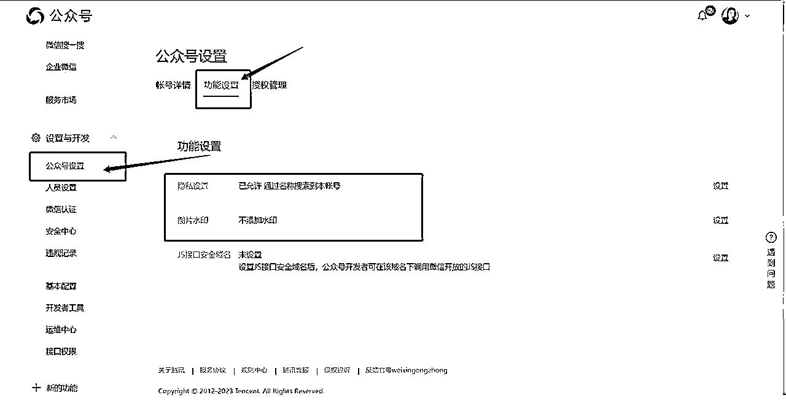

来源：https://n28vbku1px.feishu.cn/docx/VjTFdmoIhoOIuhx4wYUcc1XGn8g
嗨嗨嗨，大家好，我是王大牙！
牙运营公众号已经有将近一年的时间了，于是把自己运营公众号的心得分为五大板块：【基础认知】【账号搭建】【内容定位】【引流涨粉】【账号运营】来进行拆解。
全文一万三千字，可以说是非常详细军工饼干级别的干货了，希望能够帮助到想要打造自己的公众号的朋友们，也欢迎各位做自媒体、个人IP的朋友们前来和大牙交流碰撞！
本文适合谁：1、想要了解运营公众号，通过公众号变现的的自媒体小白2、想要巩固私域运营打造个人IP，以公众号作为切入点的自媒体创业者3、希望通过私域内容来过滤公域流量做用户筛选的的创业项目人。
好，废话不多说，直接上干货。
有的宝子可能和我一样，其实最开始接触到公众号在于投稿。但投稿会面临很多限制，比如要符合其他号主对于文章的要求，以及面临被疯狂拒稿的情况。所以搭建自己的内容平台，能够实现自由输出，并且来为自己赚钱而不是在种种限制下为其他账号打工。
运营公众号可以作为一个案例成果，是对自己的运营能力的证明，公众号成果也完全可以体现在简历上。公众号运营相对其他平台来说，运营更加简单，也更加容易出成果——如果你现在是还在上学的阶段，或者想要调转行业，运营公众号的成绩可以增色你们的简历，在职场的时候可以添更多一份选择。
公众号也能够作为一份线上名片，我拿理白老师的公众#公众号：理白学长 作为例子。
在公众号当中你可以通过内容比较丰满地了解到理白学长，不仅包括他的成绩和经历，更能从文字内容中了解到他的性格和个人特点，我们能了解到一个有血有肉的形象，而不只是冷冰冰的一大串介绍。与此同时，你还能知道理白老师有哪些产品，理白老师是做什么的，可以满足你哪些需求。了解了他这个人之后，你会对他产生信任和情感，产生这些之后，也为之后的主动链接，课程选择，跟随成长埋下了种子——这种模式，如果有课程产品，我们也可以来进行学习模仿。
这是我自己做号之后，认为除了变现之外对我影响最大的一点。运营公众号之后，会自然而然地与其他号主有沟通和交流。比如我自己就加入了很多号主群，也通过报名课程、共同合作认识了很多号主，也结识了特别优秀的非常好的朋友和老师。
环境对人的影响是巨大的，当你有一群非常优秀的朋友在身边时，你不再是单打独斗，而是被帮助着和大家一起往前走，收获珍贵的情谊的同时，认知到行动都能获得巨大提升。
大家选择做自媒体账号的最终目标都指向一个，就是变现。可能是利用自媒体账号本身变现，比如通过广告、内容吸引流量获得平台奖励的形式来变现；也可能是有自己的产品，通过自媒体账号传播产品信息，通过卖产品变现——无论是哪一种，我们做号最终的目的就是变现。那么公众号的变现能力怎么样？
公众号已经没落，公众号大不如前、逐渐消亡这种论调大家也听过很多了。但实际上公众号背靠微信，背靠最大的社交平台，即便它现在的发展不如之前迅速，但也不妨碍它仍然是流量最大的自媒体平台，公众号依然是广告主们青睐的对象。
如果你有自己的产品，公众号的粘性粉丝引流到私域也是非常有利于成交的。
变现我拿我自己的账号举例，我前期属于情感号，IP成分不多原创文章不多，引流做的还可以，虽然当时粉丝不多，但是阅读能达到过千，那个时候报价我大概一条广告大概250-450，一个月可以接5、6条；逐渐转型IP号之后，我引流这块有点懈怠，主要在写原创文章增加IP成分，这个时候我的阅读都不高，但是一条广告能报到0.3-0.6。
我们从两个方面来看，第一个方面是长期发展，第二个方面是变现能力。
有见证人问我兼职号变现能力也很强，能不能做——兼职号变现能力确实很强，但是没有办法长久发展，没有内容，依赖涨粉，而且封号风险比较高，长期性不高。
根据长期发展和变现能力来看，情感IP号是比较适合新手小白做的类型。
大家能够看到很多类型的公众号，比如文案号、科普类账号、科技号等等，为什么这些号不合适去做——从三个方面来考量，一个是受众，第二个是价值方面，第三个是运营成本。
什么样的受众的公众号广告主比较喜欢，会给你来投放广告呢？
当然是能出单，具有更高出单潜质的账号，简单来讲就是具有购买力的女性受众比例高的账号。有一些账号的受众是未成年、男性或者年龄比较大的群体，这些账号的购买力没有那么强，广告主的报价就会比较低，甚至根本就不找这些账号投放广告——我们号主都比较熟悉的一点，就是账号的未成年比例越高，越会影响报价。
第二点就是账号内容价值。比如说文案号、头像号，这些账号无论是价值和粉丝粘性都很弱，数据虽然看起来不错，但是基本无法出单，所以广告主对这些账号的要求高，报价低。
第三点，是运营成本。想要写对内容要求很高的类型账号，比如科研类型、医学类型。这种类型的账号，首先受众非常狭窄，再就是写作成本运营成本非常高，成本太高，变现和长期发展就会受限——综上所述，情感IP类型账号是新手小白想要变现，比较合适做的类型。
情感IP号从受众上来说，成年女性比例高；在价值内容上，情感IP号能写的内容非常多，可以是情感、经历、干活分享，如果个人IP的成分高的话，粉丝粘性也会提升，广告报价也会水涨船高；成本上，情感内容和围绕自己的经历、真实感受是比较容易进行创作的，粉丝也能从你的文字中感受到你的个人风格。
大家明确了公众号的价值所在，以及做号的类型方向之后，能够更好地开始。
首先，搜索关键词：微信公众号平台，找到官方的网页点击进入
我们一般选择的是个人为主体的订阅号，个人订阅号的流程为：基本信息——选择类型——信息登记——公众号基本信息
点击注册后选择注册的账号类型。
这里一共有四种类型：订阅号、服务号、小程序、企业微信。我们要选择的是订阅号。
小程序和企业微信就不解释了，订阅号和服务号的区别在于订阅号每天能够群发一次，适用于个人，服务号一个月只能群发4次适用于企业，我们自己做的账号就是订阅号哈，类型不要选错了。
接下来填写邮箱
注意一个邮箱只能申请一个账号，填好邮箱之后会收到激活验证码，收到验证码后填写信息，设置密码。
信息填完之后，就可以进行下一步啦，要是没有邮箱就自己去注册一个，网易、QQ都OK。
填写完毕进入下一步，主体信息这一块。在填写主体信息的时候，需要填写姓名、身份证号码、管理员手机（需要接收验证码）。
注意管理员身份验证这里，需要注意右边方框的要求：使用绑定了管理员本人的银行卡微信扫描二维码，并且进行人脸识别，扫码之后的微信号将成为账号的管理员。
创作者信息，也就是选填的部分可以不填写。
这一块可以不填哈，可以忽略。
人脸识别成功之后，就会显示管理员身份已确认的字样。下一步检查确认自己选择的账号类型是主体为个人的订阅号。
再接下来就到了填写自己公众号信息的步骤了，在这里提醒一下大家，公众号信息填写的几个小细节：
头像（一个月只能修改5次，不能和其他公众号重名）；公众号名称（一年只能修改2次，第一次取名会用掉一次，谨慎考虑）；微信号设置（一年只能设置一次）；公众号功能介绍（可以注册登录之后再填写）
因为有修改次数的限制，我也先给大家讲解一下填信息的方向。
头像、公众号名称和个人介绍怎么设置，设置成什么类型比较好，最根本的原则就是围绕公众号定位而定。
比如理白先生、以及我自己的账号，大家可以观察一下头像、公众号名称和个人介绍。
当然，这也并不是什么硬性规定，原则是与你做号的方向定位以及你的做号目的紧密挂钩。你想做情感内容，就往你想要的风格上去靠；想做个人IP号，就用凸显你人设风格的信息和元素。
我们进入微信公众号后台之后，首页可以看到公众号的数据，原创内容数量、粉丝数量、昨日阅读数据。
首页可以创建、编辑推文，近期草稿和近期发表的文章以及数据都在首页进行显示。
在首页把鼠标放在已发表文章上就会出现三个选项，分别是该篇文章发布数据、错别字修改以及精选、复制链接和添加合集——错别字选项是在文章发布后可以修改错别字，设置为精选即将文章置于公众号顶部；我们再看到功能栏，有4大分栏：内容与互动、数据、广告与服务、设置与开发，我们一个一个来看。
一、内容与互动：这个分栏当中需要注意的有几个部分：原创、私信、自动回复、自定义菜单、合集标签
原创选项：原创栏可以用来开白名单，也就是开启允许指定账号转载你的文章能够修改并且不显示转载来源。
除了单篇文章开白，还可以选择指定账号全局开白。都是在原创这一栏进行操作。
私信选项：私信能够查看并且回复粉丝给你发送的私信，具有与粉丝互动的功能，但与粉丝的互动内容后台管理员之外的人无法看到，这也是私信和留言的区别，留言是可以设置所有人可见的。
自动回复、自定义菜单、合集标签：这三个部分比较重要，这三个部分都会在公众号上显示，也是决定公众号传递信息效果的关键设置。
1、自动回复：自动回复分为：关键词回复、收到信息回复、被关注回复。
关键词回复需要自己设置，设置一个指定关键词，在后台输入这个关键词，就会弹出指定内容。
举个栗子：我在我的公众号设置了关键词为【牙牙】的关键词回复，后台输入【牙牙】就会弹出我的联系方式。
收到信息回复，即后台回复除了关键词之外的文字，将会统一回复的内容。这里可以回复得具有个性化一点，可以选择随机回复一条或者是全部回复。
举个栗子：
我设置的是比较俏皮的一句回复，比较有人设的感觉。
被关注回复是新关注公众号之后会直接弹出的内容，既可以作为个人介绍的补充，也可以放上公众号内容指南，提示粉丝输入后台关键词。
比如我的新关注设置就是个人介绍+关键词回复指南。
2、自定义菜单
这里可以设置自己的公众号菜单栏，可以放自己的自我介绍、资料、商务联系方式以及其他想要露出的内容。
显示在公众号上是这个效果。
3、合集标签
合集标签会显示在公众号上，起到菜单补充的作用，进入公众号首页可以直接点击合集看到公众内已经发布过的内容，相当于公众号内容分类。
这个是内容与互动部分需要注意的。
二、数据。
数据分栏可以查看到公众号各个部分的数据和分析，可以根据分析看到公众号的成绩和效果，来做调整。 需要注意的是用户分析。
用户分析中的用户属性显示公众号受众信息，主要是性别占比和年龄占比——这里是在和广告主谈广告的时候会用到的！广告主主要看受众部分的数据，有购买力年龄层次的女性占比越高，报价相对更高。未成年、老龄人占比越多，报价相对越低。
接广告一般要求未成年在20%以下，最好在18%以下。
三、广告与服务

重点关注流量主选项——粉丝超过500之后，就可以开启流量主，公众号文章产生阅读就会带来公众号平台的广告收益。
四、设置与开发
主要关注：公众号设置、人员设置
公众号设置：账号设置，也就是公众号的信息更改；功能设置，主要注意隐私设置要设置为能够搜索到公众号。图片水印设置为不添加，以免出现图片侵权的现象。

人员设置主要用来增添或去除公众号的其他管理员。
明确了这几个公众号后台设置，公众号的基础设置都能够基础完成了。
介绍完后台设置，我们第一部分的分享课程基本结束了，公众号小白应该对公众号如何操作有了一定的了解。
要确定写什么内容，还是要从变现开始说起，变现方式搞清楚了才能考虑该写些什么。干货很多，小白做号能不能变现，主要就看这个部分有没有理解。
我们已经有了账号之后，最先考虑就是：我写点什么呢？怎么确定自己要写的内容？怎么确定我们的内容方向呢？
要确定公众号写什么内容，主要看两点：定位、受众人群。
要确定我们的定位和受众人群，我们就要明确变现方式。 所以我们的思考顺序应该是：怎么变现，依靠什么变现——定位、受众人群——写什么内容。
再次强调一下思考顺序：
1、怎么变现，依靠什么变
2、定位、受众人群
3、写什么内容
我们一步一步来拆，拆的同时我们放几个账号案例，大家更好理解。
首先，公众号有几种变现方式：
1、没有产品，最基础的变现方式：广告。广告又分为直投广告和cpa广告。解释一下这两个广告——直投广告：和广告主商定一口价，复制粘贴广告主的文案直接发布，直投广告在阅达到200-300左右就可以尝试去和广告主谈了，举个栗子：
像这个就是直投广告，我们发布之后三天或者和广告主约定时间，就会删掉（避免违规风险）
cpa广告：按照广告点击购买有效人数计算，按照cpa广告的不同，1个有效人数的价格在20+—2元不等，每周结算。接cpa广告有一定涨粉门槛，需要日增粉丝达到100左右，才能挂。但也有一些公众号课程，因为开课号主本身就是广告主，可以在你账号0粉丝的时候直接给你挂上cpa广告，比如茶伞。
什么影响广告报价呢？
直投广告报价高低，主要看的是阅读量、粉丝粘性（购买的概率）、粉丝数量以及购买力女性粉丝占比。 cpa广告收入主要和外部涨粉（公域平台，比如小红书、抖音引流来的粉丝数量）有关，外部涨粉越多，cpa收入越高。
这是第一种公众号变现方式：广告。
2、有产品：借助公众号打造个人IP卖产品。
这里的有产品分为两种情况。 一种是自己没有产品，通过打造个人IP积累粉丝信任，分销别人的产品来获得佣金；第二种是有自己的产品，通过打造个人IP卖自己的产品。比如说我买了一个知识星球，这个知识星球是别人的产品，我邀请其他人通过我的邀请码购买这个星球，我就能拿到佣金，这个就是分销别人的产品。
3、有其他变现渠道，利用公众号做流量池。
举个栗子：昨天有和一位大佬聊到的，他做的是文案号，主要是为了把粉丝引流到自己的小程序上，收入来源于小程序，而不依靠广告。如果你有其他变现渠道，只是想利用公众号搞流量引流到其他地方，那也可以完全不考虑建立个人IP。
想学公众号的小白选手大部分应该都不是第3类，变现方式主要还是是1和2。
变现这部分还没清楚的，也不要着急。因为我们还有变现这个部分要单独讲，因为今天给大家推思考流程，也提前讲一点。
清楚了这三种变现方式之后，我们直接上案例：某可复制情感号+#公众号：失重限期
我们从变现方式、定位、内容来分析。
1、某可复制情感号：做号半年时间，现在粉丝将近8w，变现每月四位数到五位数。主要收入为广告，一周cpa广告收入就能达到4000+，文章阅读量在千阅以上，一条广告报价在0.4-0.8一个阅读。
变现方式：广告。
定位：大学生情感、搞钱经验，受众为18-25岁的群体。
内容：征稿文章为主，原创为次。
这个号的特点是有个人IP的成分，但不多，主要的内容还是以征稿文章为主。
这个账号典型就典型在，收入来源主要为广告。广告收入高低重点在于数据，最重要在于引流。
所以在内容上，只需要有内容来承接住这些流量，征稿文足矣。IP成分能够锦上添花，但能达到理想变现的最主要原因在于引流，但是因为IP成分不高，所以粉丝粘性一般。
这种类型的公众号最适合既没有流量又没有产品，只希望通过公众号本身广告来变现的宝子。
2、彩卉的公众号失重限期：战绩：做号半年，粉丝积累7w+，变现每月四位数到五位数。
变现分为：广告+课程社群，文章自然阅读量均阅达到1300+，一条广告报价在0.5-0.7一个阅读。
变现方式：广告+课程社群
定位：个人IP+自律+搞钱经验+情感，受众为18-26岁的群体。
内容：原创IP文为主，征稿为次。
失重限期属于既注重引流，挣到了广告的收入，又同时在打造IP上下功夫，粉丝粘性比较高。所以能在挣广告收入的同时，也能够借助公众号引流粉丝到私域，培养粉丝信任度，开设自己的社群和课程。
广告主表面看的是数据，但根本上关注的是粉丝购买的概率。 数据好，拼的是人多，1万个粉丝里可能会有5个购买；IP强，拼的就是购买概率高，3000粉丝可能就有30个成交。
解释一下个人IP成分和变现的关系：
1、强个人IP，能够使广告报价提升（粉丝信任，购买概率高），但不够强的话，对于只想通过广告赚取收入的号主来说差别不大。
2、公众号的变现进阶之路：（1）阅读达到200-300可接直投广告（IP锦上添花，引流可达到）
（2）日增100粉可接cpa（IP锦上添花，引流可达到）
（3）个人IP强，分销别人的产品赚取佣金（需要强个人IP）
（4）个人IP强，自己有课程产品，可销售自己的产品（需要强个人IP）
从1到4技能点依次点满。
想要公众号产生收入：1、有内容（可以是征稿，可以原创，有IP锦上添花但也不是必要的），流量来了数据来了，需要文章来承接住这些数据。
2、引流，要把流量引来才有数据，才能实现最基础的广告变现。（怎么引流在第三部分会讲到）
如果只想实现广告变现，那以上操作就足够了。
如果只是想提升广告报价，可以适当写一些原创文章增加IP成分，也不需要太多。
如果想进阶。又想赚广告收入，又想分销产品、开设自己的课程、做知识付费，那就在1、2步骤的基础上多在IP上下功夫，参考#公众号：失重限期。
把这个逻辑盘清楚之后，确定自己的变现方式，才能更好确定自己的定位以及内容倾向。
今天还是接着内容的部分来给大家分享，主要就是人设打造，以及人设文要怎么写。
首先，我们来解释一下什么是人设文。
人设文相当于你的自我介绍。人设文的作用是，让粉丝了解你、接触你，感受到你是个有血有肉的鲜活个体。
最好的人设文就是写自己，用自己真实的状态来面对粉丝。但这个真实并不是说什么鸡毛蒜皮、原原本本地都往上写——首先，这些经历和特点肯定是具有正能量的。可以伤心、可以有消极情绪但是不易过多，因为粉丝关注你是想获取价值。最好的状态是你就是他们想成为的人，你身上的特质也是他们想拥有的特质。如果你负能量太多，陷入独自的伤春悲秋，可能会影响到粉丝，他们对你的兴趣也不会太高。
那么我们打造人设，需要根据我们的账号定位，总结我们身上比较鲜明的特点，以及提取让人想要关注的经历，来放大你的特质。
再次强调一下，最好的人设就是你自己，昨天溟桥的分享也非常有说服力。我们需要用我们真实的特点和经历来进行人设的构造——之所以说是构造，指的是可能会聚焦你性格的某一个部分，或者放大你优点中的一个，给大家深刻的印象，但依然真实，不是虚假编造出来的。真实的文章才有真情实感，虚假的素材你写得太累，读者也不傻。
那么什么叫根据账号定位，总结鲜明特点来放大？举个栗子：比如你的账号定位是成长，那么你自己的成长经历，比如：从小城市到大城市的转换成长，从名不经传到小有名气的成长，从被拒稿到上稿的的成长，这些关于你自己的成长话题都可以作为展示的选题。
如果你的账号定位是搞钱干货，那么你的搞钱经历、成交心得，就是重点需要展示的点。
为什么我们要根据账号定位来选择放大我们的某个特征？因为我们要给自己打上强标签。
只要一提起你，就会让人想到这个强标签。
比如我给我自己打的标签就是热情、社牛、真诚，不断成长。（可能还不够强，继续努力）理白学长的强标签是自律、专业、精力旺盛以及社交悍匪，搞钱狂魔。彩卉的强标签在自律、健身、上进努力、认真负责。
你一提到这个人，就能想起他的特质，或者一提到这个特质，就能想到这个人，这就是我们打强标签的意义
。
总结一下上面的几个点，打造人设要注意几个点：1、正能量和有价值 2、真实 3、人设聚焦账号定位 4、打强标签
那我们怎么给自己打上这个强标签呢？大家应该都在视频号、抖音或者其他平台刷到过张琦老师。张琦老师当时爆火，深入人心的很大的原因，在于关于她的账号的作品铺天盖地。
首先就是一个，量。你发一篇两篇关于自己人设的文章，就像一个月发两条朋友圈。你自己觉得好像发得挺多了，但可能你朋友圈里的人根本不知道你发了，更不知道你发了啥。但是你每天几条，天天都发，你的内容就更有可能被看到，大家就更能了解你是谁，你有什么特点。
人设文一样，打造要靠时间和积累，所以菁欢现在做的日更其实价值是很高的，日拱一卒，功不唐捐，总有一天会无限爆发出来。
第二，我们打造人设的一个思路：从总到分。首先有一篇对你个人特点进行概括的文章，让大家能够大概了解你，这篇文章也能够成为你的一份社交名片，让人在阅读完这篇文章之后就能认识你。
我们想要做IP账号，打造人设的第一步，先写一篇总的介绍自己的文章，一个目的：看了这篇文章，就能大概认识我了解我，让你成为粉丝的小偶像或者让他们崇拜你，想要成为你。
有了这一篇总结性的人设文之后，我们再去抓取我们想要展示的鲜明特点，对应写针对特点的详细文章，可以说经历、感悟心得、故事、观点。
好，我们来进行一个总结。打造人设最重要的就是围绕你这个人，你的账号就是你的名片，别人看一篇文章就能更深层次认识你，也可能是认识了新的你。
人设的力量，真诚是永远的必杀技。
今天我们主要讲的是排版的内容。
首先，我们的排版需要符合一个原则：干净、简洁、浏览舒适、独特风格。前三个是基础，最后一项就稍微要花点心思了。
推文排版是图文排版，我就分成两部分来讲，一部分：图，一部分：文，以及提供几个排版做的比较好的账号给大家参考，以及我看到我们群里有小伙伴分享出来了自己的公众号，我们今天就当场来夸夸，以及提提建议哈。
1、图：先上几个账号，大家可以看看他们推文中的图。#公众号：是鹿酱吖 #公众号：失重限期
推文中的图片分为这几个部分：1、封面图 2、头图 3、标题、分割标识 4、插图 5、底图
封面图是公众号的门面，如果随随便便一张图就做封面，那可能会损失一些曝光的机会。
首先，封面的风格需要与文章标题或者内容比较相符；其次，可以在多次尝试之后，确定封面的风格，在图片上加上一些文字，文字可以是有关内容的，也可以是突出公众号的。
举个栗子，我们来看这个封面：
风格统一，提示内容，强调公众号名称，一眼看过去，舒适度很高，而且给到的第一眼信息量很足。
如果我们是往个人IP方向发展，可以把自己的生活照作为封面。
看账号内容=看人的感觉一下子拉满，如果本人不想出境，也可以找一个和你的IP气质比较相似的人物图片作为封面，我自己会用到这种方法。
当然，如果和内容相关，封面图也可以放聊天记录这种带有简短信息的图片，起到吸引大家浏览内容的效果。
这个针对封面图的几点建议，大家在平时看账号的时候，看到自己觉得很不错可以借鉴的方式也可以模仿。
2、头图
头图一般放在文章开头，我主要讲放能够增强IP效果的头图。
这些都是具有个人IP特色的头图，可以是静态的图片也可以是动图，最主要的就是能在看到内容的第一眼先看到你的个人IP特色。头图固定放在每篇推文开头，每次发推文都相当于强调账号的IP属性。
制作图片大家可以使用作图软件：搞定设计、图怪兽、醒图等。
3、标题、分割标识
举三个栗子，标题可以是数字，也可以是一个小标识，也可以是一张图文标题，主要根据我们自己的风格来进行设计。
我们排版的工具给大家推荐135编辑器和秀米，工具中就有现成的标题或者装饰元素来点缀推文。
4、插图
插图是很有必要的，是为了让整篇全是字的文章看起来没那么累。有些号主推文不配插图，整篇看下来就感觉密密麻麻，用插图来控制文章被阅读的节奏。
以及提示：插图不要带水印，其他的水印和自己公众号的水印都不要带，避免侵权的风险。
5、底图
底图主要起到介绍号主或者提供联系方式的作用。
也可以提示粉丝点赞、在看。
注意，图片和颜色和风格最好能够统一，有一个账号主题色。用色过多会显得画面很乱，影响浏览，装饰盖过文字喧宾夺主。
2、文
文字排版给大家一个参考格式：
正文字号15
两端缩进8
字间距1
行间距1.75
可以根据风格自行调整
我先说2个逻辑：
引流涨粉只是表面现象，我们更加关注的应该是引流来的粉丝是否能够变现。所以在做号之前，要先明确自己变现方式，才能明确你应该如何引流，引流什么样的粉丝。还不明确自己自己的变现方式，建议去补补27号的分享，会清楚很多。
其中广告变现，我们引流来的粉丝性质大多数为兼职粉。我详细讲的引流是主要是兼职粉引流。
引流就是先吸引人来看，你的内容对来者做一个筛选，感兴趣的留下，不感兴趣的离开。来看你的人越多，留下来的人才可能越多。
公众号变现最重要在于两点：引流、IP。有一个先后关系，先要有流量，IP才能让流量变成留量。有了流量，我们的IP才能实现变现。所以引流真的很重要，即便内容再好、再干，别人看不到，也没法变现。
我们引流的目的：一个是为了增粉，为了冲阅读量，根本是为了提升广告报价；第二个是为了让更多的人留下来，从流量到留量，能够开拓更多的变现方式，比如卖社群、卖课程、卖知识付费。
公众号最基础的收入是广告收入，主要看阅读量、粉丝量以及其他指标。当阅读达到200-300的时候就可以开始接广告了。
阅读量我分为两部分，一部分叫做自然阅读，一部分叫做涨粉阅读——自然阅读：和内容、粉丝粘性有关，文章本身的阅读；涨粉阅读：只要你增粉够多，文章阅读可以直接冲量。
举个栗子：比如你最近发布的一篇文章，自然阅读只有100；但你引流成功，新增了1000粉丝，那么你这篇最新发布的文章阅读就会被冲量，最后达到600-800的阅读。
大家可能看到一些账号，觉得内容平平无奇，为啥阅读量那么高，那可能是人家引流涨粉做的好。
我总结一下引流-变现的逻辑：1、把大量的人先吸引来，来的动作会留下数据，阅读量+涨粉数，能够提升广告报价。（无论是直投广告还是cpa，不知道这些是啥的看27号分享）
2、账号内容、你的IP会对来的人进行筛选。感兴趣的留下，不感兴趣的离开，流量变留量。
3、留量池成为潜在客户，可以对其进行销售动作，分销其他人的产品获得佣金、销售自己的社群、课程变现。
以上就是公众号引流-变现的逻辑，先把这个逻辑理顺，你在知道你做公众号是在做什么，你做公众号，变现从哪变，才能知道自己缺的是什么，下一步要做什么。
去哪引流。两点：内部引流+外部引流
在微信这个生态中进行引流，微信哪里有流量就去哪里引（其他公众号、社群、知识星球）；外部引流：去微信之外的公域流量池引流，比如小红书、知乎、抖音、快手等。
内部引流方法：1、把其他微信公众号账号的粉丝引来自己的账号2、社群引流3、知识星球引流。
社群引流和星球引流，需要提供更多内容和交流成本。引流来的粉丝相对少但质量相对高，一般用来销售产品，现在没有什么基础的宝子不用考虑哈。
小白白主要看内部引流的第一种，把其他账号的粉丝“勾引”到自己的账号上来。方法有这几种：
1、找征稿号单推（花钱）：花钱找征稿号去推你的征稿函、兼职函。这里有一个小细节我也说一下，小白白可以去找按百阅5-8元计算的征稿号，比一口价的性价比更高。花钱的项目，咱能省就省哈，勤俭持家，省钱=赚钱。找征稿号单推可以是起号时候，第一批粉丝积累。
2、找同等粉丝、阅读的账号互推（免费）：要做到第二点，首先你得有点粉丝和阅读，如果太低，可能找不到愿意和你互推的号主。可以先花钱单推再去互推。
3、联合几个号主红包抽奖活动：可以找一个粉丝多的账号，发布红包抽奖活动，好处是不发自己账号没风险。也可以几个号主各自把联合抽奖发在自己的账号上，有违规风险。
1、上车（有资金的宝，可以靠砸钱快速涨粉，快速起号）
2、找车发车（性价比高，小钱换取大涨粉，需要投入精力找车，爆车涨大粉靠点经验和运气）
3、自己做账号，自力更生（需要积累，引来的粉丝质量好，已经有产品可以考虑自己去公域开账号）
小白主要看1和2，2性价比高哈，重点关注2。
给宝子们解释一下什么叫“车”：我们到外部的平台找到博主，投放我们公众号的广告。博主的一篇内容一般可以宣传6-8个号主，找博主的宣传费用被上车号主按位置分，靠前的价格会贵一些，靠后的价格低一些。几个号主一起到公域宣传的动作就是“上车”。
自己找“车”，相当于自己找博主，可以免费占据第一个宣传位。“上车”“找车”部分有号主圈自己的规则，细节很多，之后再单独拎出来分享，现在大家只需要知道有一种这样的引流方法，知道它大概是什么就可以了。
插个题外话。之前有宝子来问我，有没有既不用花钱又省时省力的引流方法——没有。
可能有，但我还不够牛，我不了解。但你小白没积累，既不想花钱又不想花精力花时间，号主千千万，我就问一句凭啥你涨粉，凭啥你赚钱？这话听了我人都要气撅过去……当然如果大家以后找到了这种好事记得带带我……
无论是内部还是外部引流，都是把流量“勾引”来自己账号。那么我们怎么“勾引”呢？需要一个钩子。
征稿函、兼职函就是钩子，当然什么样的钩子，勾到什么样的粉丝。
兼职和征稿能大量吸引到流量，相当于质量如何暂且不论，引来的粉丝鱼龙混杂，但都是有兼职需求的人；想勾引其他类型和质量的粉丝，可以用其他钩子。
但对公众号小白来讲，征稿和兼职函是能吸引人最多的钩子，也是能在短时间让我们马上拿到广告收入的引流钩子。
所以我重点讲征稿函和兼职函，我们先来看看征稿函和兼职函长啥样：
这是我的征稿函。
这是我的兼职函。
首先，征稿函和兼职函都是真实有效的，不是假的——征稿，既可以让号主小成本获得还不错的内容减轻更新的压力，又能让一群投稿的人找到投稿机会，说不定可以遇到狠不错的写手。稿费可以按情况自行设置，大于25引流的质量会相对高一些，一般我们设置30打底，等到账号收入高了可以再提升稿费，来提升筛选门槛。
兼职，这里说的兼职是一些你自己设置的小兼职，比如找错别字、星标、在看、转发获得一些零花钱。我们要引流就先要有自己的征稿函和兼职函，自己的地盘，根据自己情况制定规则和门槛。
给大家参考几个征稿函，基本大同小异：
（失重限期）
（是鹿酱吖）
征稿函和兼职函有啥区别：征稿函单独详细介绍征稿；兼职函包含了所有能在你公众号挣到零花钱的小任务，比如征稿（可以简单概括）、错别字、读文章、投图片等等。
兼职函的“钩子”效果更好，我们对外投放的是兼职函；但是我们真正需要的是征稿，所以会把详细的征稿函放在账号里。
有了兼职函、征稿函之后，我们就可以开始从内部和外部开始投放引流了。
我们已经有了一个账号，完成了账号的基础建设，确定了基础定位、写什么内容如何来排版，明白了如何引流，那么我们就打通了账号运营的各个环节。我们先来理顺一下日常账号运营的流程。
首先，我们应该有两个表格：1、内容排期2、引流记录。
根据自己的定位，有计划地安排账号一个时间段的内容。比如三天、一周，主要看自己的节奏。
这里补充一个点，在我们的内容方面我给漏掉了。我们平时的内容，除了征稿以及自己原创之外，还可以转载。我们找到其他号主给我们开白名单，这样就可以免费转载其他号主的文章了。号主都是非常愿意互开白名单的，不用担心，觉得哪篇文章很不错，可以大胆找号主开白哈——开白名单就不会在转载的时候显示原来的账号来源，但是我们自己在文章里需要标注一下来源。
账号刚刚起步可以一周2-3更，可以以1原创+1征稿+1转载的形式，仅供大家参考，按照自己节奏调配就好啦。彩卉最近也在给大家开白，大家想开白可以直接找彩卉或者找我，也可以和群里的号主相互开白。
有了内容排期之后，内容更新就会保持一定稳定性。
引流记录是用来干嘛的？第一，我们找车、上车会产生一定费用，需要表格记录来控制我们的上车成本；第二，我们需要根据表格记录上车的效果，来根据数据分析上哪些类型的账号效果更好，让之后的引流性价比高，以小投入搏取大涨粉。
把这两个表格设置好之后，之后就可以制定自己的公众号运营流程的标准化作业计划了，提供一个思路给各位宝子：
日常基础运营主要分为： 1、内容（选题、写作、审稿、排版）2、引流（上车、找车、互推、单推……）3、商务（找广告主谈广）4、社群（社群组建+运营）
在内容方面：1、前一天确定第二天要发布的内容，排版、定时发布（如果条理清晰的宝子提前排版一周，提前定时也完全没问题）2、每两天、三天回复一次私信、审稿
在引流方面：制定引流计划，规定自己在一周大概要找多少车、上多少车，准备多少上车资金，做一个预估。
在商务方面：找广告主，大家可以进入一些号主交流群。很多号主发广告都会三连送广，积累了广告主之后可以去和其他号主交换广告主。想进号主群的可以私聊我，我拉宝子进群。
在社群运营方面：社群需要制定社群规则和活动，来保持社群活跃度。可以在每次发文之后可以发到群里进行三连活动。互动越多，粉丝粘性就越强。
这个思路大概理清之后，我们重点来讲一下社群运营哈。
当然，我们不能只看形式，我们要从目的出发，能够促成目的不限于方法哈，建立社群的形式大家有更好的也完全可以。
1、读者群2、任务兼职群3、打卡群
读者群
所有社群的基础，公众号粉丝都可以引流到读者群，其中包括过稿写手、读者，也可以拉一些相熟的号主进群。读者群一般是我们人数最多的群，也是其他群的基础。
任务兼职群：可以自己设立一些兼职，并做具体群的区分。这里的兼职指的是直接参与到公众号内容、引流、管理这些程序里去的兼职，比如主播（读公众号文章插入到内容种）、成为引流小助理等等——会和三连红包、错别字红包、早起红包这些能获得红包的小活动做一个区分。
打卡或者自律群：这个群可以设置为免费，也可以收个1块钱做一个小门槛，做单独的早起打卡自律群。
我们做社群的目的就是为了拉近和粉丝的距离，提高粉丝粘性，或者让粉丝参与到公众号的运营中来，粉丝有参与感又能减轻我们的一部分工作。
然后有一些小细节可以给大家参考：
读者群，我们可以以互动活动为主。
1、红包抽奖2、特定话题征集3、举办一些小的主题活动，比如读书、答疑、甚至是不定期开点小会议（当然，粉丝粘性是锦上添花，如果没有精力也可以不做太复杂）
但对于以后想做知识付费、课程的宝子，粉丝粘性还是很重要的，如果已经有一定粉丝基数了，可以尝试一下。
明码标价的、参与到公众号建设里的兼职。兼职内容和价格都由号主来制定，可以按照自己的需求来。比如你缺人引流，你就可以建一个引流助理兼职群。
如果你自律做的很好，这个群可以作为你未来开设付费打卡营或者自律群的基础，也可以让自己自律的个人特点深入人心。
社群运营不是一定要设置的部分，但对粉丝粘性的巩固非常有利，社群运营最重要的，就是自己制定好社群规则，规则制定好了，就能少出现社群混乱的现象。
我们平时也会进入很多社群，可以注意一下社群的规则和管理细节，取其精华而自用。
社群运营也涉及到实操的部分，很多细节也要靠实操慢慢改进，如果自己还不知道怎么做，可以多进入一些号主的读者群，做一些借鉴和参考。
我们从这几个问题入手：留言功能是啥，有啥作用？怎么开留言？有必要开留言吗？留言功能要怎么用？
1、留言功能是啥，有啥作用？
留言功能是类似在公众号文章下评论的功能，举个栗子：
留言和私信功能不同，私信的内容仅公众号后台管理员可见，留言功能可以根据管理员选择，公开可见，留言就相当于评论——评论越多、互动性就越强，粉丝粘性就越好，互动性强的公众号文章阅读和推荐也会有所提升。
除了互动，留言也能作为一个能实时更新的公告栏，可以用来做活动、抽奖名单公布。
1、留言的作用
辅助建立人设、增长粉丝粘性，以及最直接接受到粉丝的反馈。所以特别想要直接接收到粉丝反馈的号主，留言功能正中下怀。
拿我自己举个栗子，我属于影响力才干非常靠前，这种特质使我极度渴望接收到反馈。让我知道我的观点被大家看到了，这种反馈能推着我往前走，促使我更新。
2、怎么开设留言？
2018年3月之后我们注册的公众号都不再具备留言功能，所以我们想要开设留言功能，就需要找到一个具有留言功能的账号进行迁移。
迁移的逻辑是：企业号可以和个人号相互迁移，但是个人号不能和个人号相互迁移。
如果你原本注册的就是企业号的话，只需要把一个有留言的号迁移到企业号上就可以了；如果注册的是个人号，都需要先迁移成企业号，再把一个有留言的号迁移过来。
这个过程相对比较复杂，涉及迁移以及收购留言号，如果想要一步到位可以直接找专业迁移机构负责。大家想开留言的话可以去找他，我和圈内很多号主都是在小王子这迁移的，非常靠谱。（关键词：公证迁移小王子）
3、有必要开留言吗？
蠢蠢欲动的宝子赶紧来看，如果我们注册的是个人号，想要一步到位找专业机构开留言是需要一定费用的。
我个人建议现在的小白宝子，如果资金不是很支持，或者刚刚起步，开了留言功能也用不上，那可以先不考虑开留言。我自己的留言功能也是在公众号变现之后才开的，等起步之后，或者已经通过公众号变现，再去开留言都没有问题。留言虽然有很多好处，但前提是得用上。
怎么样算是用上了呢？围绕一点：对粉丝粘性是否有帮助。
要用好留言功能：1、你要有一定的粉丝基础。得有人来给你留言反馈，开留言才有用，否则私信也完全够用了，没有粉丝基础，引流没做好，就算做再好的活动没人参加，留言功能也用处不大。
2、有比较合格质量的内容。粉丝留言无非冲着两个点，一是号主本身，二是内容。如果内容不合格，大家也没有留言讨论的欲望。
3、制定互动性比较强，有一定参与感的留言规则。从鼓励、引导大家留言，到引发大家自发留言。
4、有了留言功能，要怎么来用？
总结一下大家比较常用的方式：
1、话题投稿征集
2、公告通知（抽奖开奖、过稿、活动名单）3、引导留言内容(引导留言感悟、计划)
4、留联系方式
留言就是一个公告栏，是一个曝光点，是推文之外又一个突出重点信息的位置。留言功能用得好，确实能够锦上添花，但也并不是必须具备的模块。
如果单谈提升粉丝粘性，那运营社群也是一个很好的办法，不一定非要开留言哈——围绕增强互动、提升粉丝粘性，来利用好留言功能。
至于留言要怎么开，大家可以去找迁移小王子阿栋！一条龙服务搞定！
最后再补充一点注意：
不能接的广告：1.黑五类2.易经（涉及封建迷信，新榜里的也不能接）3.下载理财APP（有违规风险，新榜里的理财课程也不建议大家接）4.纯文案、没链接，文案装在文档里（不正规）5.后台设置回复引流到QQ群（会被举报违规）6.抖音充值（涉及洗hei钱）7.大牌化妆品打折（可能涉及虚假宣传，新榜里的也不能接）以上都没一个好东西，欢迎大家补充！
以上就是大牙对公众号运营的心得啦！大家可以根据自己的情况来做一个参考，公众号运营也属于私域运营当中的的一大板块，目前大牙在私域运营领域深耕，如果有对私域运营，包含但不限于社群运营、朋友圈运营、公众号运营或者视频号方面感兴趣的小伙伴，欢迎大家前来碰撞交流呀~